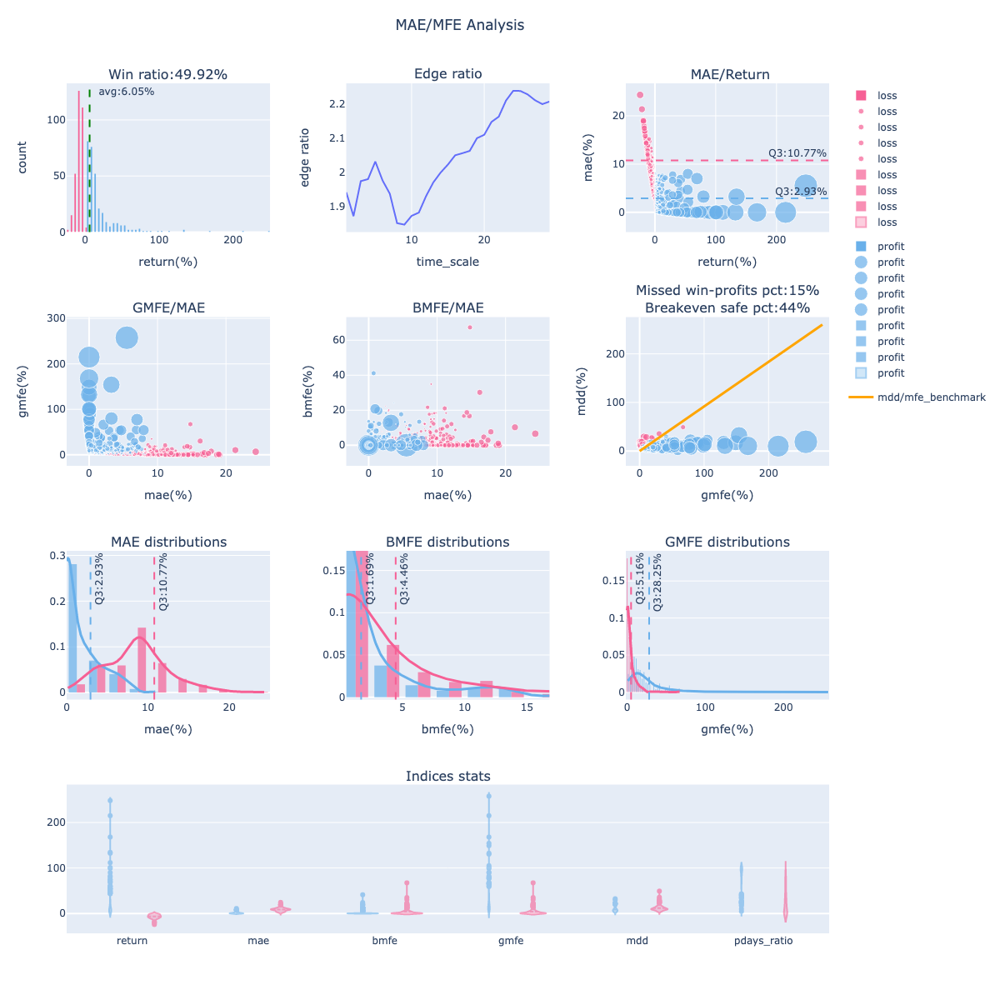
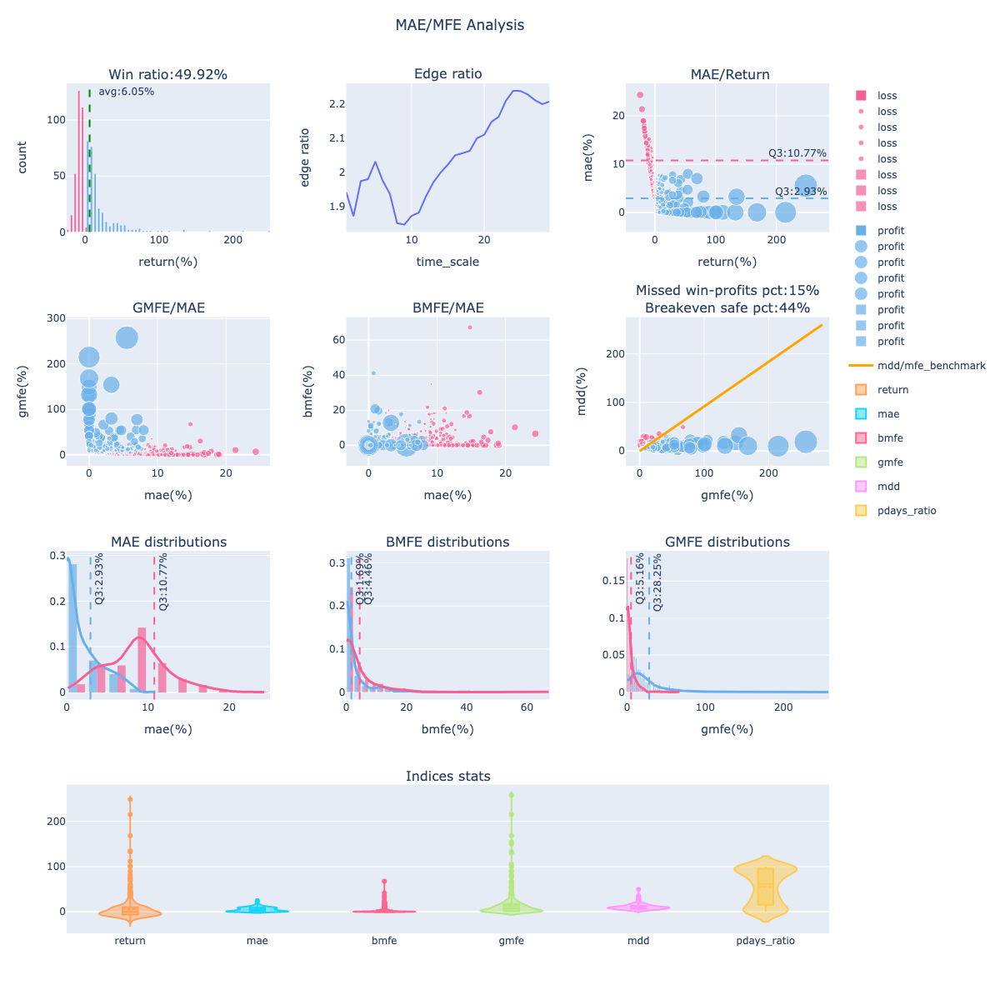

finlab.report
finlab.analysis.Report
Bases: Report
策略回測基礎報告
Args:
creturn (pd.Series): 策略報酬率時間序列。
position (pd.DataFrame): 策略報酬率時間序列。
fee_ratio (float): 交易手續費率，預設為台灣無打折手續費 0.001425。可視個人使用的券商優惠調整費率。
tax_ratio (float): 交易稅率，預設為台灣普通股一般交易交易稅率 0.003。若交易策略的標的皆為 ETF，記得設成 0.001。
trade_at (str): 選擇回測之還原股價以收盤價或開盤價計算，預設為 close。可選 close 或 open。
next_trading_date (str): 預期下期換股日。
market_info (str or MarketInfo): 可選擇'TWSTOCK', 'CRYPTO'，分別為台股或加密貨幣，
或繼承 finlab.market_info.MarketInfo 開發回測市場類別。
Attributes:
benchmark (pd.Series): 對標報酬率曲線的時間序列，用於 Report.display() 顯示策略報酬率比較標準。
update_date (str): 用於 Report.display() 顯示策略對標的報酬率曲線。
asset_type (str): 資產類別， tw_stock 或 crypto。
last_trading_date (str): 最近產生交易訊號的日期。
Source code in finlab/analysis/__init__.py
display
顯示回測報告
| PARAMETER | DESCRIPTION |
|---|---|
lagacy |
True, 使用舊版報告格式。False, 使用新版報告格式。
TYPE:
|
save_report_path |
報告儲存路徑，預設為 None，即不儲存報告。
TYPE:
|
| RETURNS | DESCRIPTION |
|---|---|
|
None |
display_mae_mfe_analysis
顯示波動分析圖組
分析使用說明。
Args:
violinmode (str): violin 型態統計圖樣式，模式分為 group 與 overlay。
預設為 group，group 模式為將交易勝敗分群統計'，overlay 採取全數統計。
mfe_scatter_x (str): 子圖 2-1、2-2 MFE 散點圖的X軸比較項目設定，可選'mae' or 'return'。
**kwargs (dict): 其餘圖表外觀(layout)參數。
Returns:
(plotly.graph_objects.Figure): 波動分析圖組
Examples:
group :

overlay :

Source code in finlab/analysis/__init__.py
get_mae_mfe
get_metrics
Get the metrics of the backtest result.
| PARAMETER | DESCRIPTION |
|---|---|
stats_ |
回測結果的統計數據。如果為 None，則會計算統計數據。
TYPE:
|
riskfree_rate |
無風險利率。
TYPE:
|
Returns:
dict: 回測結果的指標:
- backtest (dict): 回測信息。
- startDate (int): 回測開始日期。
- endDate (int): 回測結束日期。
- version (str): 回測版本。
- feeRatio (float): 手續費比率。
- taxRatio (float): 稅收比率。
- tradeAt (str): 交易時間。
- market (str): 市場。
- freq (str): 頻率。
- profitability (dict): 盈利指標。
- annualReturn (float): 年回報率。
- alpha (float): 阿爾法值。
- beta (float): 貝塔值。
- avgNStock (float): 平均股票數量。
- maxNStock (float): 最大股票數量。
- risk (dict): 風險指標。
- maxDrawdown (float): 最大回撤。
- avgDrawdown (float): 平均回撤。
- avgDrawdownDays (float): 平均回撤天數。
- valueAtRisk (float): 在險價值。
- cvalueAtRisk (float): 條件在險價值。
- ratio (dict): 比率指標。
- sharpeRatio (float): 夏普比率。
- sortinoRatio (float): 索提諾比率。
- calmarRatio (float): 卡爾瑪比率。
- volatility (float): 波動率。
- profitFactor (float): 利潤因子。
- tailRatio (float): 尾比率。
- winrate (dict): 勝率指標。
- winRate (float): 勝率。
- m12WinRate (float): 12個月勝率。
- expectancy (float): 期望值。
- mae (float): 最大不利偏離。
- mfe (float): 最大有利偏離。
- liquidity (dict): 流動性指標。
- capacity (float): 容量。
- disposalStockRatio (float): 處置股票比率。
- warningStockRatio (float): 警告股票比率。
- fullDeliveryStockRatio (float): 完全交割股票比率。
Source code in finlab/analysis/__init__.py
get_stats
取得策略統計數據 取得數據如：年化報酬、勝率、夏普率、索提諾比率、最大回檔、近期各年月報酬率統計、alpha_beta... Args: resample (str): 報酬率檢測週期，其他常用數值為 W、 M 、Q（每週、每月、每季換股）。 riskfree_rate (float): 無風險利率，與夏普率計算有關。 Returns: (dict): 策略指標數據
Source code in finlab/analysis/__init__.py
get_trades
取得回測逐筆交易紀錄
| RETURNS | DESCRIPTION |
|---|---|
DataFrame
|
交易紀錄，欄位包含：
|
Source code in finlab/analysis/__init__.py
position_info
run_analysis
執行策略分析外掛模組
Args:
analysis (str or object): finlab.analysis內的分析模組名稱，ex:'liquidityAnalysis'。
display (bool): 是否顯示模組分析圖表。
**kwargs (mapping, optional): 分析模組參數調整。
Returns:
(pd.DataFrame or plotly.graph_objects.Figure): 分析結果